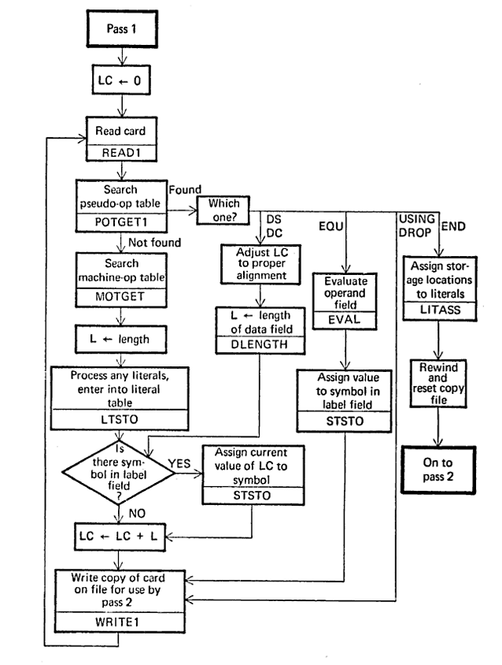

Jump to Question
Question
1
Pass I Assembler & Comparisons
Q.1 (a) Draw and explain flowchart of pass I of two pass assembler with example.

Figure: Pass 1 Assembler Flowchart
Explanation:
Pass 1 scans the source program to determine addresses of instructions/data. It builds Symbol Table, Literal Table, and Pool Table, producing intermediate code.
- Initialize: Set Location Counter (LC) from START.
- Scan: Read line by line. Update LC.
- Symbols: Add labels to Symbol Table with current LC.
- Literals: Add to Literal Table (assign address at LTORG/END).
- Output: Intermediate Code for Pass 2.
Q.1 (b) Differences
i. Literal vs Immediate Operand
| Feature | Immediate Operand | Literal |
|---|---|---|
| Storage | Part of instruction. No separate memory. | Stored in Literal Pool (memory). |
| Speed | Faster (no memory access). | Slower (requires memory access). |
| Example | MOVEM AREG, 5 |
MOVER AREG, ='5' |
ii. Assembler vs Compiler
| Feature | Assembler | Compiler |
|---|---|---|
| Input | Assembly Language (Mnemonics). | High-Level Language (C, Java). |
| Output | Machine Code (Object Code). | Machine Code or Intermediate Code. |
| Complexity | Simple (1-to-1 mapping mostly). | Complex (Optimization, Analysis). |
Question
2
Pass I Simulation & Data Structures
Q.2 (a) Show output of Pass-I for the given code.
PROG START 50
USING PROG+2, 15
L 1, FIVE
A 1, =F'2'
LTORG
ST 1, RES
FIVE DC F'4'
RES DS 4F
END
USING PROG+2, 15
L 1, FIVE
A 1, =F'2'
LTORG
ST 1, RES
FIVE DC F'4'
RES DS 4F
END
1. Location Counter Processing
| Line | Statement | LC |
|---|---|---|
| 1 | PROG START 50 | - |
| 3 | L 1, FIVE | 50 |
| 4 | A 1, =F'2' | 54 |
| 5 | LTORG (=F'2') | 58 |
| 6 | ST 1, RES | 62 |
| 7 | FIVE DC F'4' | 66 |
| 8 | RES DS 4F | 70 |
*Assuming IBM 360 style: 1 word = 4 bytes increment.
2. Symbol Table
| Symbol | Address |
|---|---|
| PROG | 50 |
| FIVE | 66 |
| RES | 70 |
3. Literal Table
| Literal | Address |
|---|---|
| =F'2' | 58 |
Q.2 (b) Necessity of Data Structures in Pass-I
- Symbol Table (SYMTAB): Stores addresses of labels for backward/forward referencing.
- Literal Table (LITTAB): Stores literals to assign addresses at the end.
- Pool Table (POOLTAB): Tracks literal pools to know when to assign addresses.
- Location Counter (LC): Tracks current memory address.
- Machine Opcode Table (MOT): Look up instruction lengths to increment LC.
Question
3
Macros & Compilers
Q.3 (a) Phases of Compiler

Analysis (Lexical, Syntax, Semantic) -> Synthesis (Intermediate Code, Optimization, Code Generation).
Q.3 (b) Macros: Definition, Advantages, Difference from Functions
Definition
A macro is a named block of code that is expanded inline during assembly/preprocessing.
Advantages
- Code Reusability: Write once, use many times.
- Performance: No function call overhead (stack PUSH/POP).
- Readability: Meaningful names for complex code sequences.
Macro vs Function
| Aspect | Macro | Function |
|---|---|---|
| Expansion | Inline (Pre-processing). | Call/Return (Runtime). |
| Size | Increases code size. | Saves memory (single copy). |
| Speed | Faster execution. | Slower (call overhead). |
Question
4
Advanced Macros
Q.4 (a) AIF and AGO Pseudo-ops
Used for conditional assembly within macros.
- AIF (Assembler IF): Conditional branch.
AIF (condition) .LABEL - AGO (Assembler GO): Unconditional branch.
AGO .LABEL
Example:
MACRO
CHECK &X
AIF (&X EQ 0) .ZERO
ADD AREG, &X
AGO .END
.ZERO
MOVER AREG, ='0'
.END
MEND
Q.4 (b) Single Pass Macro Processor
Expands macros in a single pass of the source code. Requires macros to be defined before they are called.
Working:
- Read source line.
- If it's a Macro Definition, store in tables (MNT/MDT).
- If it's a Macro Call, lookup tables and expand immediately.
- If standard instruction, output as is.